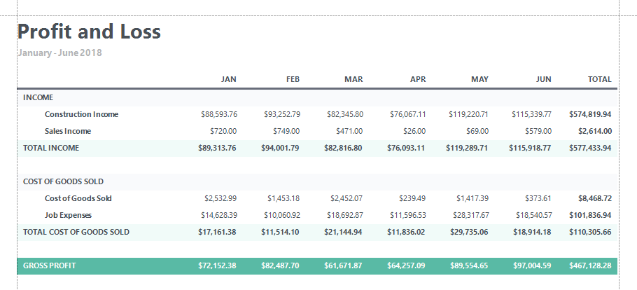
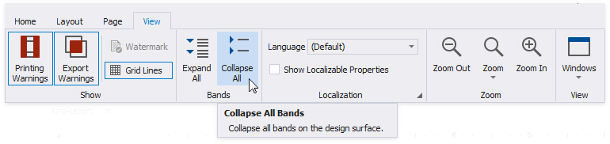
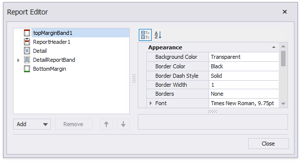
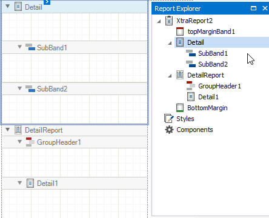
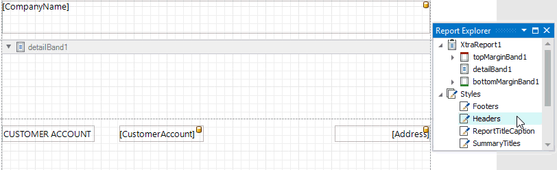

Introduction to Banded Reports
Banded reports provide a generalized report layout notion. When you preview a banded report, a report document is generated based on the report layout and data source.
Report Bands
A report layout consists of bands that contain report controls and define their location on document pages. A blank report contains the following bands:
The Detail Band is printed for every record in a data source unless you filtered the data.
Every report should have a detail band, and you cannot delete it.
The Top Margin and Bottom Margin bands. These bands are repeated once on every document page.

You can also add the following bands:
Report Header and Report Footer
The Report Header is the report's first band (margins are "out-of-page" zones). Use this band to display the report's name, company logo, date of creation, username, etc.
The Report Footer is placed before the Page Footer and Bottom Margin on the report's last page. You can use the Report Footer band for report summaries or conclusions.
Page Header and Page Footer
These bands are at the top and bottom of every page in a report. They display information that should be printed on every page.
Group Header and Group Footer
These bands are above and below each group. The Group and Sort Panel create these bands automatically.
Tip
Only the detail and group bands can be used to display dynamic data source contents. Other bands display titles, summaries, and extra information.
The following image illustrates a sample report layout and the Report Explorer that reflects the report's structure:

Add a Detail Band to a Master-Detail Band
Use the Detail Report band to create hierarchical master-detail reports. Detail report bands provide detailed information about each record in the master report's detail band (for example, orders shipped to each customer). You can create such reports when master-detail relationships are defined between data source tables:

The Detail Report band is a separate report (subreport) with its own data source and different bands. A report can have any number of detail reports that can also be nested.
The following image illustrates a master-detail report and the Report Explorer that reflects the report's structure:

Vertical Bands
You can replace the Detail band with the Vertical Header, Vertical Detail and Vertical Total bands to display record fields vertically and print data records horizontally - from left to right (and vise versa if the report's RTL mode is enabled).

To add vertical bands to your report, right-click the report in the Report Designer and choose Insert Vertical Band in the invoked context menu.

Note
If your report's Detail band contains report controls, this band and all these controls are lost when you add a vertical band (the same behavior takes place in the opposite situation).
The following vertical bands are available:
- Vertical Header
Contains headers of the report's data fields. These headers are arranged vertically. - Vertical Details
This band is printed for every record in a data source unless you filtered the data. The records are displayed one after another in a horizontal direction. - Vertical Total
This band is placed at the rightmost position (leftmost when RTL is enabled). You can use the Vertical Total band for report summaries or conclusions.
You can use the Report Wizard to create a report with vertical bands. Refer to the Vertical Reports topic for instructions on how to create a report with vertical bands.
Create Band Copies
You can create functional copies of a band, for example, to display different contents based on a specific condition. To do this, add sub-bands to bands.

Tip
See Lay out Dynamic Report Content for details on how to specify the location of bands' content on document pages.
Manage Report Bands
Expand or Collapse Bands in the Report Designer
Click the arrow button on a band's title to collapse or expand that band.

Click Collapse All on the Toolbar's View Tab to collapse all bands in a report. Click Expand All to expand all report bands.

Right-click a band and select Collapse Other Bands from the context menu to collapse all bands except the clicked band.

Hide Bands in the Report Document
You can avoid printing band content in a document. To do this, select the band and set the band's Height property to zero or disable its Visible property in the Property Grid.

Remove Bands
Select a band on the report design surface and press DELETE. This removes the band and all its content.
Add Bands
To add a band, right-click a report's design surface, and in the invoked context menu, choose Insert Band.

You can insert a detail report band if the report's data source has master-detail relations.

Access the Bands Collection
Click the Edit and Reorder Bands context link in a report's smart tag to access the report's bands collection.

This command is also available in a band's context and smart tag menus.

The invoked editor allows you to reorder bands and change their properties.

Alternatively, use the Report Explorer to edit and reorder bands. Select a band and edit its properties in the Property Grid.

Drag a band to change its order or move inside/outside of another band. The drop targets are highlighted when you drag a band over them.

You can drag bands to the following targets:
| Dragged Band | Drop Targets |
|---|---|
| SubBand | All bands except TopMargin and BottomMargin |
| GroupHeader, GroupFooter | XtraReport (root node), DetailReport |
| DetailReport | XtraReport (root node), DetailReport |
Apply Styles to Bands
Select a band and switch to the Property Grid. Expand the Styles group and set the Style property to the style name.

As an alternative, you can drag a style from the Report Explorer onto a band. This is applicable to all bands except DetailReport.
